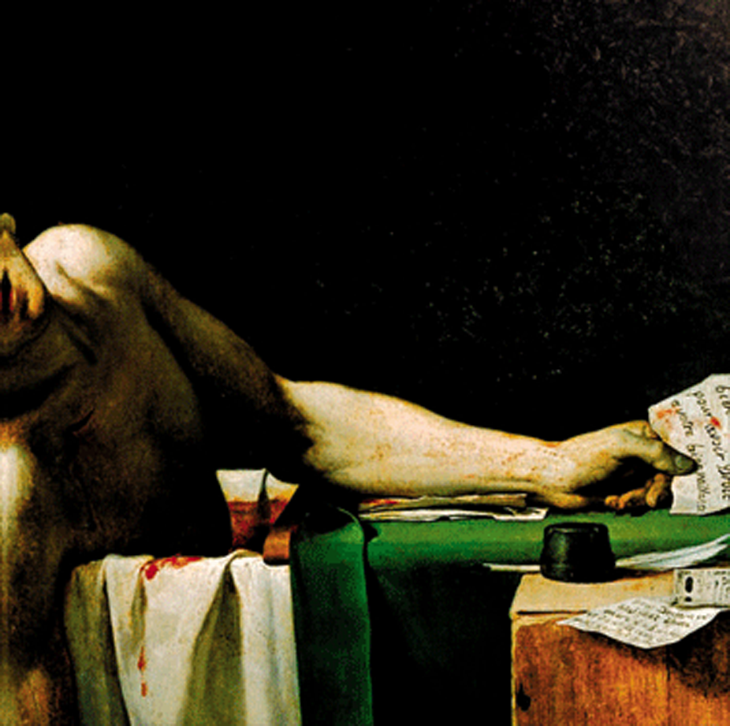

Deathconsciousness
Have a Nice Life
2008 • 13 songs • 85:04
Genres: Post-Punk, Shoegaze
Drone, Post-Rock, Post-Industrial, Lo-Fi Indie, Gothic Rock
Aside from the post-punk influences (Joy Division and early The Cure), there is also a strong undercurrent of darkness bordering on flirtation with nihilism.
This album is depressive, dark, sombre and existential.
You've now reached the end. What do you want to do?
Listen to more post-punk albums